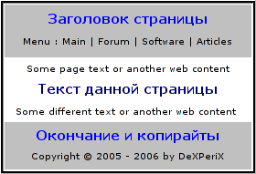

Создание сменного дизайна средствами PHP (cookies метод)
На многих сайтах можно видеть окошко выбора дизайна. Так пользователь может сам выбрать внешний вид, который ему по душе.
Согласитесь, это довольно удобно. Сегодня и мы реализуем эту возможность! 
Для начала рассмотрим общую модель дизайна сайта:

Как видите, чаще всего дизайн можно разбить на 3 части: заголовок страницы (чаще всего он одинаков у всех страниц), текст страницы (у каждой страницы свой) и окончание страницы (аналогично заголовку).
Пусть у нас есть две функции: print-begin (выводит заголовок) и print-end (выводит окончание страницы). Тогда PHP код страниц будет выглядеть примерно так:
...
print-begin();
echo('Текст данной страницы');
print-end();А ещё очень удобно выделить данные функции в какой-нибудь файл, например, design.php. Т.е. наш код станет таким:
include('design.php');
print-begin();
echo('Текст данной страницы');
print-end();Теперь ещё усложним наш пример: в зависимости от значения переменной $_GET['design'] будем использовать тот или иной дизайн:
switch($_GET['design'])
{
case 1:
include('design.php');
break;
case 2:
include('another-design.php');
break;
default:
include('design.php');
};
print-begin();
echo('Текст данной страницы');
print-end();Теперь попробуйте запустить данный скрипт с параметром design=1 и design=2 (например, http://localhost/index.php?design=2). Вы увидите, что дизайн действительно изменится (если файлы design.php и another-design.php существуют). Вот и прекрасно, основной скрипт уже написан, его мы менять не будем, однако можете поэкспериментировать с ним сами.
Теперь мы научимся красиво устанавливать переменную $design. Очень неудобно каждый раз передавать её в адресной строке. Чаще всего данная переменная регистрируется либо в cookies, либо отдельно сохраняется на сайте в параметрах конкретного пользователя. Мы будем использовать cookies. Если кто-то не знает или забыл, что такое cookies, напоминаю: cookies - это маленькие текстовые файлы, установленные на компьютере пользователя, в которые Ваш сайт может записывать или считывать информацию. Данная информация представима в виде: "переменная" -> "значение".
Для работы с cookies нам нужно уметь устанавливать и считывать их значения. Для установки cookies используется функция setcookie(string name [, string value [, int expire [, string path [, string domain [, int secure]]]]]). Нам интересны лишь первые 3 параметра: имя переменной куки; значение данной переменной; дата истечения срока действия cookie. Вот пример работы с данной функцией:
$nextyear = mktime(0,0,0,date("m"),date("d"),date("Y")+1);
setcookie('design', 1, $nextyear);Здесь мы переменной design присваиваем значение 1. Хранится это значение будет год, после срока установки.
Узнавать значения cookies ещё проще, чем устанавливать - они автоматически считываются в соответствующие переменные. Т.е. если на компьютере пользователя установлена cookie-переменная design, то вы можете её узнать просто посмторев PHP-переменную $_COOKIE['design']:
printf("Значение cookie-переменной design = %s",$_COOKIE['design']);И ещё, с cookies можно работать ТОЛЬКО до вывода текста (до вывода тега). Также установленые cookie будут невидимы до тех пор, пока не будет загружена следующая страница.
Если всё ещё не понятно, что такое cookie, то лучше почитайте ещё какую-нибудь статью, т.к. вещь это очень полезная.
Ну и напоследок интерфейс установки cookies на сайт:
Форма выбора дизайна (designform.htm):
<form action="setcook.php" method="post">
<select name="diz_sel" size="1">
<option value="1">Design 1</option>
<option value="2">Design 2</option>
</select>Файл setcook.php (устанавливает значения cookies):
<?php
$nextyear = mktime(0,0,0,date("m"),date("d"),date("Y")+1);
setcookie('diz', $_POST['diz_sel'], $nextyear);
header("Location: $_SERVER['HTTP_REFERER']");
?>Файл index.php (код страницы):
<?php
$tmpdiz = 0;
if( isset($_COOKIE['design']) ) $tmpdiz = $_COOKIE['design'];
if( isset($_GET['design']) ) $tmpdiz = $_GET['design'];
switch($tmpdiz)
{
case 1:
include('design.php');
break;
case 2:
include('another-design.php');
break;
default:
include('design.php');
};
print-begin();
echo('Текст данной страницы');
echo('Также Вы можете выбрать дизайн страницы :');
include('designform.htm');
print-end();
?>Взаключение скажу, что это не единственный способ сделать дизайн сменным - их огромное количество. Однако данный метод (включение нужного файла с функциями) один из самых простых и удобных.
Если у вас на сайте есть регистрация пользователей и о них хранится какая-либо информация, то лучше хранить информацию о дизайне именно там, т.к. не у всех включены cookies. И ещё: никогда не храните в cookies конфиденциальные данные - cookies довольно легко подделываются...
Ну вот и всё, что я хотел вам сегодня рассказать. Надеюсь, эта статья хоть кому-то помогла и сделала жизнь чуточку легче 
Скачать в формате PDF (116.3 kB)
Комментарии
webzona
26.03.2007Распиши лучше свой исходный код!
nnn
28.06.2007Я бы предложил использовать вместо include - require (_once) с отладкой будет значительно полегче а во-вторых, откуда берется переменная $design?? такой скрипт вероятно будет работать, только при включенном register_globals .... что тоже уже не есть хорошо